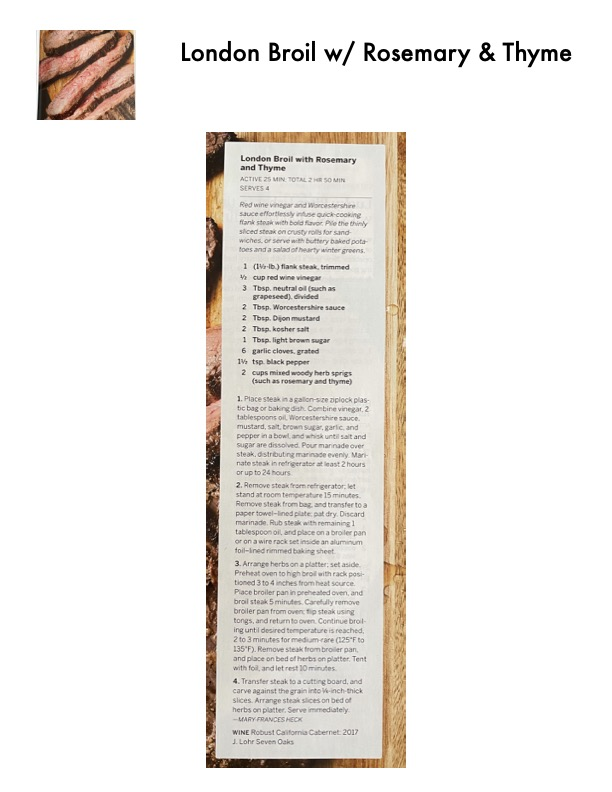

London Broil with Rosemary and Thyme

Original cookbook page 183
Red wine vinegar and Worcestershire sauce effortlessly infuse quick-cooking flank steak with bold flavor. Pile the thinly sliced steak on crusty rolls for sandwiches, or serve with buttery baked potatoes and a salad of hearty winter greens.
Prep: 25 minutes • Cook: 7-8 minutes • Total: 2 hour 50 minutes
Ingredients
- 1 (1½-lb.) flank steak, trimmed
- ½ cup red wine vinegar
- 3 Tbsp. neutral oil (such as grapeseed), divided
- 2 Tbsp. Worcestershire sauce
- 2 Tbsp. Dijon mustard
- 2 Tbsp. kosher salt
- 1 Tbsp. light brown sugar
- 6 garlic cloves, grated
- 1½ tsp. black pepper
- 2 cups mixed woody herb sprigs (such as rosemary and thyme)
Instructions
- Place steak in a gallon-size ziplock plastic bag or baking dish. Combine vinegar, 2 tablespoons oil, Worcestershire sauce, mustard, salt, brown sugar, garlic, and pepper in a bowl, and whisk until salt and sugar are dissolved. Pour marinade over steak, distributing marinade evenly. Marinate steak in refrigerator at least 2 hours or up to 24 hours.
- Remove steak from refrigerator; let stand at room temperature 15 minutes. Remove steak from bag, and transfer to a paper towel–lined plate; pat dry. Discard marinade. Rub steak with remaining 1 tablespoon oil, and place on a broiler pan or on a wire rack set inside an aluminum foil–lined rimmed baking sheet.
- Arrange herbs on a platter; set aside. Preheat oven to high broil with rack positioned 3 to 4 inches from heat source. Place broiler pan in preheated oven, and broil steak 5 minutes. Carefully remove broiler pan from oven, flip steak using tongs, and return to oven. Continue broiling until desired temperature is reached, 2 to 3 minutes for medium-rare (125°F to 135°F). Remove steak from broiler pan, and place on bed of herbs on platter. Tent with foil, and let rest 10 minutes.
- Transfer steak to a cutting board, and carve against the grain into ¼-inch-thick slices. Arrange steak slices on bed of herbs on platter. Serve immediately.
Recipe #183 from collection